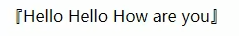
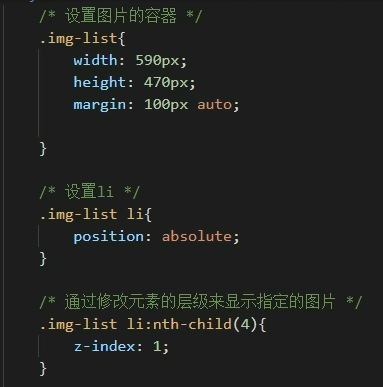
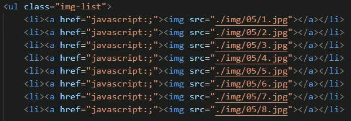

# 遗忘点
# 样式设置的方法：s
<!-- 内联样式 开发时不要使用 -->
<p style="color:red"> 这里是文字 </p>
<!-- 内部样式表 放在head中 只能对一个页面起作用-->
<head>
<style>
/* 这个是css中的注释方式 */
p{
color:red;
}
</style>
</head>
<!--
外部样式表 编写.css的文件 将style里的内容写在这个文件中
利用link标签引入外部的css文件
该方式可以利用到浏览器的缓存机制
-->
<head>
<link rel="stylesheet" href="./style.css">
</head>
2
3
4
5
6
7
8
9
10
11
12
13
14
15
16
17
18
19
# 选择器：
id选择器：#id{}
class选择器：.class{} 一个标签可以属于多个clss
通配选择器：*{} 选中全部
交集选择器：div.font {} 选择器1选择器2选择器3{} 选择复合多个条件的元素
并集选择器：h1,p,h2{} 同时选择多个对应元素
子元素选择器：div > h1 {} 仅选择直接联系的后代
后代选择器：div h1 {} 所有后代都被选择
兄弟选择器：p + span{} 仅选择与p紧挨着的span
p ~ span{} 选择p后面的所有span
元素选择器：p[title] 选择有title属性的p元素
<style> p[title] /* 选择含有指定属性的元素 */ p[title=abc] /* 选择含有指定属性且固定属性值的元素 */ p[title^=abc] /* 选择含有指定属性且指定值开头的元素 */ p[title&=abc] /* 选择含有指定属性且指定值结尾的元素 */ p[title*=abc] /* 选择含有指定属性含有指定值的元素 */ </style>1
2
3
4
5
6
7
# 伪类选择器：
来选择特殊状态的元素，例如选择ul中的第一个li元素
<style>
/* 在所有子元素中选择 */
ul > li:first-child{color:red} /* 选择第一个子元素 */
ul > li:last-child{color:red} /* 选择最后一个子元素 */
ul > li:nth-child(){color:red}
/*
括号中可以填入
n 第n个子元素
2n 偶数位的子元素
2n+1 / odd 奇数位的子元素
*/
/* 在所有同类型的子元素中选择 */
利用first-of-type、last-of-type、nth-of-type()
/* 否定伪类 将除了第五个li的其他li变色*/
ul > li:not(:nth-of-type(5)){color:red}
</style>
2
3
4
5
6
7
8
9
10
11
12
13
14
15
16
17
18
# 超链接的伪类：
<style>
/* :link 用来表示没访问过的链接 （正常链接） 超链接独有
:vister 用来表示访问过的链接 只能修改颜色 一般不用 超链接独有
:hover 鼠标移入的状态
:active 鼠标点击的状态
*/
a:link{color:red;}
a:hover{color:green;}
a:active{color:blue;}
</style>
2
3
4
5
6
7
8
9
10
# 伪元素：
表示页面中一些特殊的并不真实存在的元素（特殊的位置），伪元素用::开头
<style>
::first-letter /* 表示第一个字母 */
::first-line /* 表示第一行 */
::selection /* 表示选中的内容*/
/* 以下是div常用 */
::before /* 元素的开始 */
::after /* 元素的最后 */
-befor 和 after 必须结合content属性来使用
div::before{
content:"abc";
color:"red"
}
div::after{
content:"efg";
color:"blue"
}
</style>
<body>
<div>
Hello How are you
</div>
</body>
2
3
4
5
6
7
8
9
10
11
12
13
14
15
16
17
18
19
20
21
22
23
图例： 
# 长度单位：
- 像素 px
- 百分比 相对于父元素改变 50%
- em 相对于元素的字体大小计算 em=1font-size
- rem 相对于html{}的字体大小计算
# 字体：
字体相关的样式有 color font-size font-family
font: Bold italic 字体大小/行高 字体族（字体简写）
font-family 字体族：serif sans-serif monospace都属于字体的类别
可以同时指定多个字体，每个字体间用，隔开，从第一个开始直到可以使用
<style>
/* 使用服务器中的字体 */
@font-face{
/* 指定字体的名字 */
font-family:'myfont';
/* 指定字体的名字 */
src:url('./font/xxxxxxxx.ttf')
}
p{
/* 多指定几个以防用户不能使用 */
font-family:myfont,Microsoft YaHei;
}
</style>
2
3
4
5
6
7
8
9
10
11
12
13
# 图标：
（以iconfont为例）
- 选择需要的图标添加至项目库
- 将项目下载到本地，将压缩包中的文件放在网页项目的指定文件夹（html、demo不需要）
- 用link引入iconfont.css
使用方式
通过实体使用
<style> .iconfont{font-size:100px;} </style> <body> <i class="iconfont"></i> <!-- 后面的编码可以在压缩后的文件夹里的html中查看 --> </body>1
2
3
4
5
6
7
通过伪元素使用
可以指定在每个
标签开头
<style> p::before{ content:'\e61c'; font-family:'iconfont'; font-size:100px; } </style> <body> <p> Hello </p> </body>1
2
3
4
5
6
7
8
9
10
11
12
# 文本：
（图片对齐方式相同）
# 文本的水平对齐
text-align: left right center justify（两端）
文本的垂直对齐
vertical-align：baseline top bottom middle（实际情况不使用）
网页文本溢出
<style>
.box{
width:200px;
/* white-space 用于设置网页如何处理空白
常用属性：normal nowrap（不换行） pre（保留空白）
*/
white-space:nowrap;
overflow:hidden;
text-overflow:ellipsis;
}
</style>
2
3
4
5
6
7
8
9
10
11
# Layout
# 内容区：
width和height设置的大小是限制内容区域的
# 边框和边距：
border可以给div设置边框，边框的设置会让整体的div增加宽度和高度。
<style>
div{ 上 左 下 右
border-width:
border-color:
border-style: none solid dotted dashed dashed double
border:10px orange solid
}
</style>
2
3
4
5
6
7
8
padding和marging都会影响布局大小。
margin：0 auto表示水平居中
# 子元素溢出
若子div的内容超出父div，可以使用overflow属性来处理溢出内容。
overflow：
visible（默认值 会溢出显示） hidden（溢出内容隐藏）
scroll（会形成垂直和水平的滚动条）auto（根据需要产生滚动条）
# 行内元素转换：
行内元素的marging不影响布局，因为行内元素受内容影响。
display属性可以用来设置元素显示的类型。
display：
inline(设置为行内元素)
block(设置成块元素)
inline-block(行内块元素，既可以设置高度和宽度又不独占一行)
table(设置为表格)
none(隐藏并且不占据位置)
visibility：
- visible(默认值)
- hidden(隐藏但仍占据位置)
# 重置默认样式：
页面或者标签都会设置默认的样式，例如p与p之间的margin。
修改只需要在style内设置body,p的默认margin。
可以直接使用现成的重置样式表：
reset.css（去除默认样式）、normalize.css（统一默认样式）
# 居中：
文字在父元素中垂直居中，只需要将height与line-height设置成一样就行。
# 盒子模型：
width height padding border均会影响盒子的模型大小
box-sizing可以设置盒子大小的计算方式
box-sizing:content-box 默认值，宽度和高度用来设置内容区的大小
box-sizing：border-box 宽度和高度用来设置整个盒子可见的大小 会自动调整内容区
# 轮廓：
outline属性可以用来设置元素的轮廓线，但是不会影响布局，用法与border相同，通常使用在:hover添加轮廓
# 阴影：
box-shadow 用来设置元素的阴影效果，同样不会影响布局
<style>
.box{
box-shadow: 5px 5px 20px rgba(0,0,0,.3);
/*
第一个值 水平偏移量 正右负左
第二个值 垂直偏移量 正下负上
第三个值 阴影模糊半径
第四个值 阴影的颜色
*/
}
</style>
2
3
4
5
6
7
8
9
10
11
# 圆角：
border-radius 来设置圆角
通常使用 border-radius：左上 右上 右下 坐下
border-radius：50%表示圆形
还有border-top-right-radius、border-bottom-left-radius等属性
# 浮动
float ： none（默认） left right 用来设置水平的布局
- 浮动会脱离文档流，即块元素不占用一整行
- 设置浮动后元素回向父元素的左侧或右侧移动，默认不会从父元素移出
- 浮动元素向左右移动时，默认不会超过前边设置的浮动元素
- 若浮动元素上边是一个没有设置浮动的块元素，则无法上移
- 浮动元素不会超过它上边浮动的兄弟元素
- 浮动元素不会盖住元素，所以可以设置文字环绕图片的效果
- 导航栏ul一般给li设置float
# BFC
BFC主要解决高度塌陷的问题，页面的高度常常需要根据内容来扩充大小，若设置了float可能会造成高度塌陷，影响内容。
开启BFC的元素不会被浮动的元素所覆盖
开启BFC的元素其子元素和父元素的外边距不会重叠
开启BFC的元素可以包含浮动的子元素
常用的方式是：overlow：hidden / auto
# clear属性
clear用于清除浮动元素对当前元素所产生的影响，原理是添加了上外边距
可选值：left right both（清除最大影响的一侧）
常用方法：
<style>
.box1{border：10px red solid;}
.box2{width:100px;height:100px;
background-color:#bfa;float:left}
.box1::after{content:"";
display:block;
clear:both}/* 常用 */
</style>
<body>
<div class="box1">
<div class="box2">
</div>
</div>
</body>
2
3
4
5
6
7
8
9
10
11
12
13
14
# clearfix类
用于解决高度塌陷和外边距重叠，直接给div装上这个类即可
<style>
.clearfix::before,
.clearfix::after{
content:"";
display:tabel;
clear:both;
}
</style>
2
3
4
5
6
7
8
# 定位 Positon
偏移量（offset）
-开启元素定位后可以通过偏移量来设置元素的位置
-有top bottom left right四个属性
相对定位 Position：relative
-参照于元素在文档流中的位置进行定位
-会提升元素的层级 z-index属性可以更改层级
-不会改变元素的性质
绝对定位 Position： absolute
-元素会从文档流中脱离
-改变元素性质
-使元素提升一个层级
-是相对其最近开启了定位的祖先元素进行定位的
轮播图常用到绝对定位，要使好几张图片固定到一个位置
# 轮播图原理：
 轮播图常常只是通过js修改突变的层级以达到图片的变换
# 组件
# 背景
background-color
background-image:url()
background-repeat: repeat/repeat-x/repeat-y/no-repeat
background-position:方位词 top/left/right/bottom/center
偏移量 -50px 300px
设置背景范围
background-clip: border-box(默认) padding-box(内边距+内容区)
centent-box（内容区）
背景图片大小
background-size：100% auto / cover / contain
背景移动
background-attachment：scroll 默认 /fixed
背景渐变
background-image：linear-gradient（red,yellow，color...）上红下黄渐变
（to right，red，yellow）从右到左
还可以指定度数/圈
background-image: radial-gradient(red,yellow) 径向渐变
2
3
4
5
6
7
8
9
10
11
12
13
14
15
16
17
18
19
20
21
22
# CSS-Sprite
若设置按钮的hover和active位不同图片，常常会有加载闪烁问题，可以保存成一张大图片再利用position来偏移
# 亮点
# 过渡效果：
transition:用于为样式设置过度效果
transition: height 3s 说明高度的变化要通过三秒来实现
transition: all 3s 说明所有属性的变化要通过三秒来实现
transition-property:要执行过渡的属性，可以用，隔开
transition-duration：指定过渡效果的持续时间
transition-timing-function：过渡的时序函数
-ease 默认 慢速开始 先加速 再减速
-linear 匀速运动
-ease-in 加速运动
-ease-out 减速运动
-ease-in-out 先加速后减速
-cubic-bezier（）来指定时序函数 hhtps：//cubic-bezier.com
-steps(n) 分成n部执行
-steps(n,end/start) end是在时间结束时过渡，反正开始时
transition-delay：等待时间
2
3
4
5
6
7
8
9
10
11
12
<style>
li .box{
height:0
overflow:hidden
transition:height 3s
}
li:hover .box{
height:100px
}
</style>
2
3
4
5
6
7
8
9
10
11
# 动画：
<style>
动画需要设置帧
@keyframes 动画名称{
from{
这里写动画开始的属性
}
/* 中间还可以用百分比来更细化关键帧 */
to{
这里写动画结束的属性
}
}
.div{
animation-name:动画名称
animation-duration:动画执行时间
animation-delay:延时
animation-timing-function:动画的时序函数 同过渡
animation-iteration-count: 次数 infinite(无限)
animation-direction：运行方向
-normal 从from-to
-reverse 从to-from
-alternate 从from-to-from循环
-alternate-reverse 反之
animation-play-state：执行状态 running/pause
animation-fill-mod:填充模式
-none 默认回到原来位置
-forwards 停在动画结束的位置
}
</style>
2
3
4
5
6
7
8
9
10
11
12
13
14
15
16
17
18
19
20
21
22
23
24
25
26
27
28
29
# 平移:
变形是指通过css来改变元素的形状或者位置，且变形不会影响页面的布局
常用于过渡、hover中的位置变化，这样不容易影响页面布局
-transform：
transform-origin:变形的原点 默认值为 center
-平移（px/百分比 相对于自身计算）
translateX（） translateY（）
translateZ（） Z轴的平移要先给html设置一个视距离
<style>
html{
perspective:800px;
}
body:hover .box1{
transform:translateZ(200px);
}
</style>
2
3
4
5
6
7
8
# 旋转
<style>
需要给html设置视距
transform：rotateY(deg/turn)
transform：rotateX(deg/turn)
transform：rotateZ(px)
</style>
2
3
4
5
6
# 缩放
transform：scaleX（） 水平方向缩放
transform：scaleY（） 垂直方向缩放
transform：scale（） 双方向缩放
括号内填入缩放倍数
2
3
4
# flex弹性盒
-CSS中的又一种布局手段，主要代替浮动
-flex可以使元素具有弹性，自适应能力
# 弹性容器：
display:flex 给容器添加该属性就变成弹性容器
-flex-direction： 指容器中弹性元素的排列方式
- 水平： row （左-右） row-reverse （右-左）
- 垂直：column（上-下）column-reverse（下-上）
其中弹性元素的排列方向称作主轴
与主轴垂直的方向称作测轴
flew-wrap: 指弹性元素是否在弹性容器中自动换行
nowrap（默认不会） wrap（沿着辅轴换行） wrap-reverse（反之）
flew-flow： wrao和direction的简写方式
justify-content: 分配主轴空白的方法
flex-start 主轴起边排序 / flex-end 主轴终边排序
center 元素居中排序
space-around：空白分布元素两侧
space-between：空白均匀分到元素中间
space-enenly：空白分布到元素的单侧
align-item: 辅轴上元素的对齐方式 同上 主要使用center
align-content： 辅轴上空白的分布
# 弹性元素：
flew-grow：指定弹性元素的伸展的系数
-当父元素有多余的空间时，子元素如何伸展
-父元素空间会按比例进行分配
<div>
<div class="box1"> </div>
<div class="box2"> </div>
<div class="box3"> </div>
</div>
.box1{flew-grow:1}
.box2{flew-grow:2}
.box3{flew-grow:3}
就会按比例分配宽度
2
3
4
5
6
7
8
9
10
flew-shrink： 指弹性元素的收缩系数 使用方法同上
flex-basis： 指定的时元素在主轴上的基础长度
默认值auto，表示参照元素自身的高度或宽度
若指定具体的数值，则以该值为准
flex： 可以设置元素所有的三个样式
增长 缩减 基础
initial 0 1 auto
auto 1 1 auto
none 0 0 auto
order： 可以决定弹性元素的排列顺序